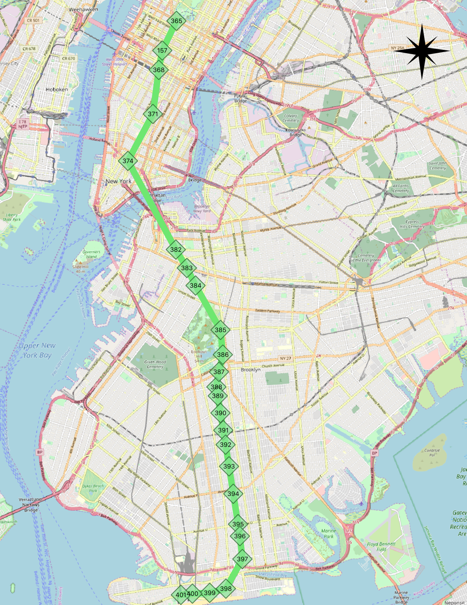
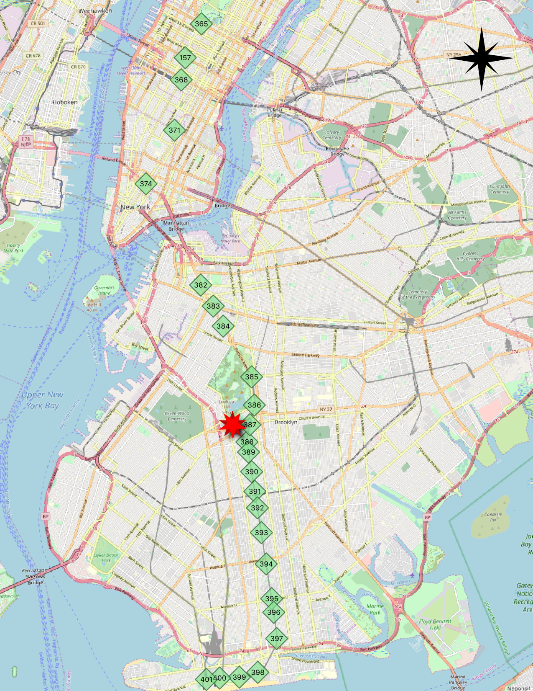
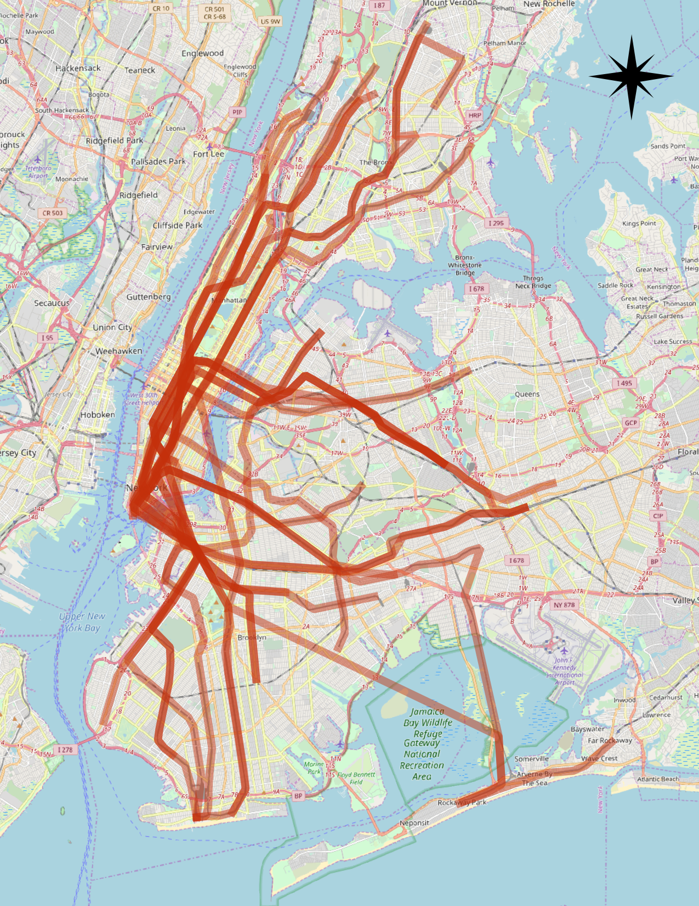
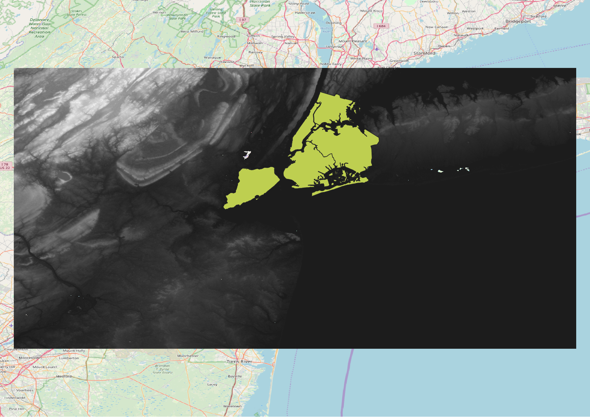
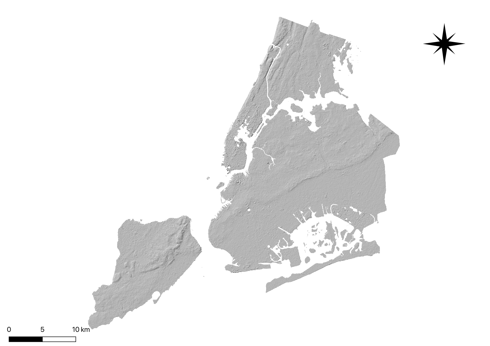

6. Advanced PostGIS¶
6.1. More Spatial Joins¶
In the last section we saw the ST_Centroid(geometry) and ST_Union([geometry]) functions, and some simple examples. In this section we will do some more elaborate things with them.
6.1.1. Creating a Census Tracts Table¶
In the course \data\ directory, is a file that includes attribute data, but no geometry, nyc_census_sociodata.sql. The table includes interesting socioeconomic data about New York: commute times, incomes, and education attainment. There is just one problem. The data are summarized by “census tract” and we have no census tract spatial data!
In this section we will
- Load the
nyc_census_sociodata.sqltable - Create a spatial table for census tracts
- Join the attribute data to the spatial data
- Carry out some analysis using our new data
6.1.1.1. Loading nyc_census_sociodata.sql¶
- Open the SQL query window in PgAdmin
- Select File->Open from the menu and browse to the
nyc_census_sociodata.sqlfile - (Alternative) In case your postgres user does not have access to access the files in the directory you can use a text editor to open the
nyc_census_sociodata.sqlfile and copy its content into the pgAdmin query window - Press the “Run Query” button
- If you press the “Refresh” button in pgAdmin, the list of tables should now include at
nyc_census_sociodatatable
6.1.1.2. Creating a Census Tracts Table¶
As we saw in the previous section, we can build up higher level geometries from the census block by summarizing on substrings of the blkid key. In order to get census tracts, we need to summarize grouping on the first 11 characters of the blkid.
360610001001001 = 36 061 000100 1 001
36 = State of New York
061 = New York County (Manhattan)
000100 = Census Tract
1 = Census Block Group
001 = Census Block
Create the new table using the ST_Union aggregate:
-- Make the tracts table
CREATE TABLE nyc_census_tract_geoms AS
SELECT
ST_Union(geom) AS geom,
SubStr(blkid,1,11) AS tractid
FROM nyc_census_blocks
GROUP BY tractid;
-- Index the tractid
CREATE INDEX idx_nyc_census_tract_geoms_tractid
ON nyc_census_tract_geoms (tractid);
6.1.1.3. Join the Attributes to the Spatial Data¶
Join the table of tract geometries to the table of tract attributes with a standard attribute join
-- Make the tracts table
CREATE TABLE nyc_census_tracts AS
SELECT
g.geom,
a.*
FROM nyc_census_tract_geoms g
JOIN nyc_census_sociodata a
ON g.tractid = a.tractid;
-- Index the geometries
CREATE INDEX sidx_nyc_census_tract
ON nyc_census_tracts USING GIST (geom);
6.1.1.4. Answer an Interesting Question¶
Answer an interesting question! “List top 10 New York neighborhoods ordered by the proportion of people who have graduate degrees.”
SELECT
100.0 * Sum(t.edu_graduate_dipl) / Sum(t.edu_total) AS graduate_pct,
n.name, n.boroname
FROM nyc_neighborhoods n
JOIN nyc_census_tracts t
ON ST_Intersects(n.geom, t.geom)
WHERE t.edu_total > 0
GROUP BY n.name, n.boroname
ORDER BY graduate_pct DESC
LIMIT 10;
We sum up the statistics we are interested, then divide them together at the end. In order to avoid divide-by-zero errors, we don’t bother bringing in tracts that have a population count of zero.
graduate_pct | name | boroname
--------------+-------------------+-----------
47.6 | Carnegie Hill | Manhattan
42.2 | Upper West Side | Manhattan
41.1 | Battery Park | Manhattan
39.6 | Flatbush | Brooklyn
39.3 | Tribeca | Manhattan
39.2 | North Sutton Area | Manhattan
38.7 | Greenwich Village | Manhattan
38.6 | Upper East Side | Manhattan
37.9 | Murray Hill | Manhattan
37.4 | Central Park | Manhattan
Note
New York geographers will be wondering at the presence of “Flatbush” in this list of over-educated neighborhoods. The answer is discussed in the next section.
6.1.2. Polygon/Polygon Joins¶
In our interesting query (in Answer an Interesting Question) we used the ST_Intersects(geometry_a, geometry_b) function to determine which census tract polygons to include in each neighborhood summary. Which leads to the question: what if a tract falls on the border between two neighborhoods? It will intersect both, and so will be included in the summary statistics for both.

To avoid this kind of double counting there are two methods:
- The simple method is to ensure that each tract only falls in one summary area (using ST_Centroid(geometry))
- The complex method is to divide crossing tracts at the borders (using ST_Intersection(geometry,geometry))
Here is an example of using the simple method to avoid double counting in our graduate education query:
SELECT
100.0 * Sum(t.edu_graduate_dipl) / Sum(t.edu_total) AS graduate_pct,
n.name, n.boroname
FROM nyc_neighborhoods n
JOIN nyc_census_tracts t
ON ST_Contains(n.geom, ST_Centroid(t.geom))
WHERE t.edu_total > 0
GROUP BY n.name, n.boroname
ORDER BY graduate_pct DESC
LIMIT 10;
Note that the query takes longer to run now, because the ST_Centroid function has to be run on every census tract.
graduate_pct | name | boroname
--------------+---------------------+-----------
48.0 | Carnegie Hill | Manhattan
44.2 | Morningside Heights | Manhattan
42.1 | Greenwich Village | Manhattan
42.0 | Upper West Side | Manhattan
41.4 | Tribeca | Manhattan
40.7 | Battery Park | Manhattan
39.5 | Upper East Side | Manhattan
39.3 | North Sutton Area | Manhattan
37.4 | Cobble Hill | Brooklyn
37.4 | Murray Hill | Manhattan
Avoiding double counting changes the results!
6.1.2.1. What about Flatbush?¶
In particular, the Flatbush neighborhood has dropped off the list. The reason why can be seen by looking more closely at the map of the Flatbush neighborhood in our table.

As defined by our data source, Flatbush is not really a neighborhood in the conventional sense, since it just covers the area of Prospect Park. The census tract for that area records, naturally, zero residents. However, the neighborhood boundary does scrape one of the expensive census tracts bordering the north side of the park (in the gentrified Park Slope neighborhood). When using polygon/polygon tests, this single tract was added to the otherwise empty Flatbush, resulting in the very high score for that query.
6.1.3. Large Radius Distance Joins¶
A query that is fun to ask is “How do the commute times of people near (within 500 meters) subway stations differ from those of people far away from subway stations?”
However, the question runs into some problems of double counting: many people will be within 500 meters of multiple subway stations. Compare the population of New York:
SELECT Sum(popn_total)
FROM nyc_census_blocks;
8175032
With the population of the people in New York within 500 meters of a subway station:
SELECT Sum(popn_total)
FROM nyc_census_blocks census
JOIN nyc_subway_stations subway
ON ST_DWithin(census.geom, subway.geom, 500);
10855873
There’s more people close to the subway than there are people! Clearly, our simple SQL is making a big double-counting error. You can see the problem looking at the picture of the buffered subways.

The solution is to ensure that we have only distinct census blocks before passing them into the summarization portion of the query. We can do that by breaking our query up into a subquery that finds the distinct blocks, wrapped in a summarization query that returns our answer:
WITH distinct_blocks AS (
SELECT DISTINCT ON (blkid) popn_total
FROM nyc_census_blocks census
JOIN nyc_subway_stations subway
ON ST_DWithin(census.geom, subway.geom, 500)
)
SELECT Sum(popn_total)
FROM distinct_blocks;
5005743
That’s better! So a bit over half the population of New York is within 500m (about a 5-7 minute walk) of the subway.
6.2. Validity¶
In 90% of the cases the answer to the question, “why is my query giving me a ‘TopologyException’ error” is “one or more of the inputs are invalid”. Which begs the question: what does it mean to be invalid, and why should we care?
6.2.1. What is Validity¶
Validity is most important for polygons, which define bounded areas and require a good deal of structure. Lines are very simple and cannot be invalid, nor can points.
Some of the rules of polygon validity feel obvious, and others feel arbitrary (and in fact, are arbitrary).
- Polygon rings must close.
- Rings that define holes should be inside rings that define exterior boundaries.
- Rings may not self-intersect (they may neither touch nor cross one another).
- Rings may not touch other rings, except at a point.
The last two rules are in the arbitrary category. There are other ways to define polygons that are equally self-consistent but the rules above are the ones used by the OGC SFSQL standard that PostGIS conforms to.
The reason the rules are important is because algorithms for geometry calculations depend on consistent structure in the inputs. It is possible to build algorithms that have no structural assumptions, but those routines tend to be very slow, because the first step in any structure-free routine is to analyze the inputs and build structure into them.
Here’s an example of why structure matters. This polygon is invalid:
POLYGON((0 0, 0 1, 2 1, 2 2, 1 2, 1 0, 0 0));
You can see the invalidity a little more clearly in this diagram:

The outer ring is actually a figure-eight, with a self-intersection in the middle. Note that the graphic routines successfully render the polygon fill, so that visually it is appears to be an “area”: two one-unit squares, so a total area of two units of area.
Let’s see what the database thinks the area of our polygon is:
SELECT ST_Area(ST_GeometryFromText(
'POLYGON((0 0, 0 1, 1 1, 2 1, 2 2, 1 2, 1 1, 1 0, 0 0))'
));
st_area
---------
0
What’s going on here? The algorithm that calculates area assumes that rings to not self-intersect. A well-behaved ring will always have the area that is bounded (the interior) on one side of the bounding line (it doesn’t matter which side, just that it is on one side). However, in our (poorly behaved) figure-eight, the bounded area is to the right of the line for one lobe and to the left for the other. This causes the areas calculated for each lobe to cancel out (one comes out as 1, the other as -1) hence the “zero area” result.
6.2.2. Detecting Validity¶
In the previous example we had one polygon that we knew was invalid. How do we detect invalidity in a table with millions of geometries? With the ST_IsValid(geometry) function. Used against our figure-eight, we get a quick answer:
SELECT ST_IsValid(ST_GeometryFromText(
'POLYGON((0 0, 0 1, 1 1, 2 1, 2 2, 1 2, 1 1, 1 0, 0 0))'
));
f
Now we know that the feature is invalid, but we don’t know why. We can use the ST_IsValidReason(geometry) function to find out the source of the invalidity:
SELECT ST_IsValidReason(ST_GeometryFromText(
'POLYGON((0 0, 0 1, 1 1, 2 1, 2 2, 1 2, 1 1, 1 0, 0 0))'
));
Self-intersection[1 1]
Note that in addition to the reason (self-intersection) the location of the invalidity (coordinate (1 1)) is also returned.
We can use the ST_IsValid(geometry) function to test our tables too:
-- Find all the invalid polygons and what their problem is
SELECT name, boroname, ST_IsValidReason(geom)
FROM nyc_neighborhoods
WHERE NOT ST_IsValid(geom);
name | boroname | st_isvalidreason
-------------------------+---------------+-----------------------------------------------------------
Howard Beach | Queens | Self-intersection[597264.083368305 4499924.54228856]
Corona | Queens | Self-intersection[595483.058764138 4513817.95350787]
Red Hook | Brooklyn | Self-intersection[584306.820375986 4502360.51774956]
Steinway | Queens | Self-intersection[593545.572199759 4514735.20870587]
6.2.3. Repairing Invalidity¶
First the bad news: there is no 100% guaranteed way to fix invalid geometries. The worst case scenario is identifying them with the ST_IsValid(geometry) function, moving them to a side table, exporting that table, and repairing them externally.
Here’s an example of SQL to move invalid geometries out of the main table into a side table suitable for dumping to an external cleaning process.
-- Side table of invalids
CREATE TABLE nyc_neighborhoods_invalid AS
SELECT * FROM nyc_neighborhoods
WHERE NOT ST_IsValid(geom);
-- Remove them from the main table
DELETE FROM nyc_neighborhoods
WHERE NOT ST_IsValid(geom);
A good tool for visually repairing invalid geometry is QGIS (https://qgis.org/en/site/) which includes a validation tool under Vector->Geometry Tools->Check Validity….
Now the good news: a large proportion of invalidities can be fixed inside the database using either:
- the ST_MakeValid function or,
- the ST_Buffer function.
6.2.3.1. ST_MakeValid¶
ST_MakeValid attempts to repair invalidities without only minimal alterations to the input geometries. No vertices are dropped or moved, the structure of the object is simply re-arranged. This is a good thing for clean, but invalid data, and a bad thing for messy and invalid data.
-- Fix the invalid figure-8 polygon
SELECT ST_AsText(ST_MakeValid(
'POLYGON((0 0, 0 1, 1 1, 2 1, 2 2, 1 2, 1 1, 1 0, 0 0))'
));
MULTIPOLYGON(
((0 0,0 1,1 1,1 0,0 0)),
((1 1,1 2,2 2,2 1,1 1))
)
ST_MakeValid successfully converts the figure-8 into a multi-polygon that represents the same area.
6.2.3.2. ST_Buffer¶
Cleaning using the buffer trick takes advantage of the way buffers are built: a buffered geometry is a brand new geometry, constructed by offsetting lines from the original geometry. If you offset the original lines by nothing (zero) then the new geometry will be structurally identical to the original one, but because it is built using the OGC topology rules, it will be valid.
For example, here’s a classic invalidity – the “banana polygon” – a single ring that encloses an area but bends around to touch itself, leaving a “hole” which is not actually a hole.
POLYGON((0 0, 2 0, 1 1, 2 2, 3 1, 2 0, 4 0, 4 4, 0 4, 0 0))

Running the zero-offset buffer on the polygon returns a valid OGC polygon, consisting of an outer and inner ring that touch at one point.
SELECT ST_AsText(
ST_Buffer(
ST_GeometryFromText('POLYGON((0 0, 2 0, 1 1, 2 2, 3 1, 2 0, 4 0, 4 4, 0 4, 0 0))'),
0.0
)
);
POLYGON((0 0,0 4,4 4,4 0,2 0,0 0),(2 0,3 1,2 2,1 1,2 0))
Note
The “banana polygon” (or “inverted shell”) is a case where the OGC topology model for valid geometry and the model used internally by ESRI differ. The ESRI model considers rings that touch to be invalid, and prefers the banana form for this kind of shape. The OGC model is the reverse. Neither is “correct”, they are just different ways to model the same situation.
6.3. Equality¶
6.3.1. Equality¶
Determining equality when dealing with geometries can be tricky. PostGIS supports three different functions that can be used to determine different levels of equality, though for clarity we will use the definitions below. To illustrate these functions, we will use the following polygons.

These polygons are loaded using the following commands.
CREATE TABLE polygons (id integer, name varchar, poly geometry);
INSERT INTO polygons VALUES
(1, 'Polygon 1', 'POLYGON((-1 1.732,1 1.732,2 0,1 -1.732,
-1 -1.732,-2 0,-1 1.732))'),
(2, 'Polygon 2', 'POLYGON((-1 1.732,-2 0,-1 -1.732,1 -1.732,
2 0,1 1.732,-1 1.732))'),
(3, 'Polygon 3', 'POLYGON((1 -1.732,2 0,1 1.732,-1 1.732,
-2 0,-1 -1.732,1 -1.732))'),
(4, 'Polygon 4', 'POLYGON((-1 1.732,0 1.732, 1 1.732,1.5 0.866,
2 0,1.5 -0.866,1 -1.732,0 -1.732,-1 -1.732,-1.5 -0.866,
-2 0,-1.5 0.866,-1 1.732))'),
(5, 'Polygon 5', 'POLYGON((-2 -1.732,2 -1.732,2 1.732,
-2 1.732,-2 -1.732))');

Exact equality is determined by comparing two geometries, vertex by vertex, in order, to ensure they are identical in position. The following examples show how this method can be limited in its effectiveness.
SELECT a.name, b.name, CASE WHEN ST_OrderingEquals(a.poly, b.poly)
THEN 'Exactly Equal' ELSE 'Not Exactly Equal' end
FROM polygons as a, polygons as b;
name | name | case
-----------+-----------+-------------------
Polygon 1 | Polygon 1 | Exactly Equal
Polygon 1 | Polygon 2 | Not Exactly Equal
Polygon 1 | Polygon 3 | Not Exactly Equal
Polygon 1 | Polygon 4 | Not Exactly Equal
Polygon 1 | Polygon 5 | Not Exactly Equal
Polygon 2 | Polygon 1 | Not Exactly Equal
Polygon 2 | Polygon 2 | Exactly Equal
Polygon 2 | Polygon 3 | Not Exactly Equal
Polygon 2 | Polygon 4 | Not Exactly Equal
Polygon 2 | Polygon 5 | Not Exactly Equal
Polygon 3 | Polygon 1 | Not Exactly Equal
Polygon 3 | Polygon 2 | Not Exactly Equal
Polygon 3 | Polygon 3 | Exactly Equal
Polygon 3 | Polygon 4 | Not Exactly Equal
Polygon 3 | Polygon 5 | Not Exactly Equal
Polygon 4 | Polygon 1 | Not Exactly Equal
Polygon 4 | Polygon 2 | Not Exactly Equal
Polygon 4 | Polygon 3 | Not Exactly Equal
Polygon 4 | Polygon 4 | Exactly Equal
Polygon 4 | Polygon 5 | Not Exactly Equal
Polygon 5 | Polygon 1 | Not Exactly Equal
Polygon 5 | Polygon 2 | Not Exactly Equal
Polygon 5 | Polygon 3 | Not Exactly Equal
Polygon 5 | Polygon 4 | Not Exactly Equal
Polygon 5 | Polygon 5 | Exactly Equal
In this example, the polygons are only equal to themselves, not to other seemingly equivalent polygons (as in the case of Polygons 1 through 3). In the case of Polygons 1, 2, and 3, the vertices are in identical positions but are defined in differing orders. Polygon 4 has colinear (and thus redundant) vertices on the hexagon edges causing inequality with Polygon 1.
As we saw above, exact equality does not take into account the spatial nature of the geometries. There is an function, aptly named ST_Equals, available to test the spatial equality or equivalence of geometries.
SELECT a.name, b.name, CASE WHEN ST_Equals(a.poly, b.poly)
THEN 'Spatially Equal' ELSE 'Not Equal' end
FROM polygons as a, polygons as b;
name | name | case
-----------+-----------+-----------------
Polygon 1 | Polygon 1 | Spatially Equal
Polygon 1 | Polygon 2 | Spatially Equal
Polygon 1 | Polygon 3 | Spatially Equal
Polygon 1 | Polygon 4 | Spatially Equal
Polygon 1 | Polygon 5 | Not Equal
Polygon 2 | Polygon 1 | Spatially Equal
Polygon 2 | Polygon 2 | Spatially Equal
Polygon 2 | Polygon 3 | Spatially Equal
Polygon 2 | Polygon 4 | Spatially Equal
Polygon 2 | Polygon 5 | Not Equal
Polygon 3 | Polygon 1 | Spatially Equal
Polygon 3 | Polygon 2 | Spatially Equal
Polygon 3 | Polygon 3 | Spatially Equal
Polygon 3 | Polygon 4 | Spatially Equal
Polygon 3 | Polygon 5 | Not Equal
Polygon 4 | Polygon 1 | Spatially Equal
Polygon 4 | Polygon 2 | Spatially Equal
Polygon 4 | Polygon 3 | Spatially Equal
Polygon 4 | Polygon 4 | Spatially Equal
Polygon 4 | Polygon 5 | Not Equal
Polygon 5 | Polygon 1 | Not Equal
Polygon 5 | Polygon 2 | Not Equal
Polygon 5 | Polygon 3 | Not Equal
Polygon 5 | Polygon 4 | Not Equal
Polygon 5 | Polygon 5 | Spatially Equal
These results are more in line with our intuitive understanding of equality. Polygons 1 through 4 are considered equal, since they enclose the same area. Note that neither the direction of the polygon is drawn, the starting point for defining the polygon, nor the number of points used are important here. What is important is that the polygons contain the same space.
Exact equality requires, in the worst case, comparison of each and every vertex in the geometry to determine equality. This can be slow, and may not be appropriate for comparing huge numbers of geometries. To allow for speedier comparison, the equal bounds operator, =, is provided. This operates only on the bounding box (rectangle), ensuring that the geometries occupy the same two dimensional extent, but not necessarily the same space.
SELECT a.name, b.name, CASE WHEN a.poly = b.poly
THEN 'Equal Bounds' ELSE 'Non-equal Bounds' end
FROM polygons as a, polygons as b;
name | name | case
-----------+-----------+------------------
Polygon 1 | Polygon 1 | Equal Bounds
Polygon 1 | Polygon 2 | Non-equal Bounds
Polygon 1 | Polygon 3 | Non-equal Bounds
Polygon 1 | Polygon 4 | Non-equal Bounds
Polygon 1 | Polygon 5 | Non-equal Bounds
Polygon 2 | Polygon 1 | Non-equal Bounds
Polygon 2 | Polygon 2 | Equal Bounds
Polygon 2 | Polygon 3 | Non-equal Bounds
Polygon 2 | Polygon 4 | Non-equal Bounds
Polygon 2 | Polygon 5 | Non-equal Bounds
Polygon 3 | Polygon 1 | Non-equal Bounds
Polygon 3 | Polygon 2 | Non-equal Bounds
Polygon 3 | Polygon 3 | Equal Bounds
Polygon 3 | Polygon 4 | Non-equal Bounds
Polygon 3 | Polygon 5 | Non-equal Bounds
Polygon 4 | Polygon 1 | Non-equal Bounds
Polygon 4 | Polygon 2 | Non-equal Bounds
Polygon 4 | Polygon 3 | Non-equal Bounds
Polygon 4 | Polygon 4 | Equal Bounds
Polygon 4 | Polygon 5 | Non-equal Bounds
Polygon 5 | Polygon 1 | Non-equal Bounds
Polygon 5 | Polygon 2 | Non-equal Bounds
Polygon 5 | Polygon 3 | Non-equal Bounds
Polygon 5 | Polygon 4 | Non-equal Bounds
Polygon 5 | Polygon 5 | Equal Bounds
As you can see, all of our spatially equal geometries also have equal bounds. Unfortunately, Polygon 5 is also returned as equal under this test, because it shares the same bounding box as the other geometries. Why is this useful, then? Although this will be covered in detail later, the shot answer is that this enables the use of spatial indexing that can quickly reduce huge comparison sets into more manageable blocks when joining or filtering data.
6.4. Linear Referencing¶
Linear referencing is a means of representing features that are can be described by referencing a base set of linear features. Common examples of features that are modelled using linear referencing are:
- Highway assets, which are referenced using miles along a highway network
- Road maintenance operations, which are referenced as occurring along a road network between a pair of mile measurements.
- Aquatic inventories, where fish presence is recorded as existing between a pair of mileage-upstream measurements.
- Hydrologic characterizations (“reaches”) of streams, recorded with a from- and to- mileage.
The benefit of linear referencing models is that the dependent spatial observations do not need to be separately recorded from the base observations, and updates to the base observation layer can be carried out knowing that the dependent observations will automatically track the new geometry.
Note
The ESRI convention for linear referencing is to have a base table of linear spatial features, and a non-spatial table of “events” which includes a foreign key reference to the spatial feature and a measure along the referenced feature. We will use the term “event table” to refer to the non-spatial tables we build.
6.4.1. Creating Linear References¶
If you have an existing point table that you want to reference to a linear network, use the ST_LineLocatePoint function, which takes a line and point, and returns the proportion along the line that the point can be found.
-- Simple example of locating a point half-way along a line
SELECT ST_LineLocatePoint('LINESTRING(0 0, 2 2)', 'POINT(1 1)');
-- Answer 0.5
-- What if the point is not on the line? It projects to closest point
SELECT ST_LineLocatePoint('LINESTRING(0 0, 2 2)', 'POINT(0 2)');
-- Answer 0.5
We can convert the nyc_subway_stations into an “event table” relative to the streets by using ST_LineLocatePoint.
-- All the SQL below is in aid of creating the new event table
CREATE TABLE nyc_subway_station_events AS
-- We first need to get a candidate set of maybe-closest
-- streets, ordered by id and distance...
WITH ordered_nearest AS (
SELECT
ST_GeometryN(streets.geom,1) AS streets_geom,
streets.id AS streets_id,
subways.geom AS subways_geom,
subways.id AS subways_id,
ST_Distance(streets.geom, subways.geom) AS distance
FROM nyc_streets streets
JOIN nyc_subway_stations subways
ON ST_DWithin(streets.geom, subways.geom, 200)
ORDER BY subways_id, distance ASC
)
-- We use the 'distinct on' PostgreSQL feature to get the first
-- street (the nearest) for each unique street gid. We can then
-- pass that one street into ST_LineLocatePoint along with
-- its candidate subway station to calculate the measure.
SELECT
DISTINCT ON (subways_id)
subways_id,
streets_id,
ST_LineLocatePoint(streets_geom, subways_geom) AS measure,
distance
FROM ordered_nearest;
-- Primary keys are useful for visualization softwares
ALTER TABLE nyc_subway_station_events ADD PRIMARY KEY (subways_id);
Once we have an event table, it’s fun to turn it back into a spatial view, so we can visualize the events relative to the original points they were derived from.
To go from a measure to a point, we use the ST_LineInterpolatePoint function. Here’s our previous simple examples reversed:
-- Simple example of locating a point half-way along a line
SELECT ST_AsText(ST_LineInterpolatePoint('LINESTRING(0 0, 2 2)', 0.5));
-- Answer POINT(1 1)
And we can join the nyc_subway_station_events tables back to the nyc_streets table and use the measure attribute to generate the spatial event points, without referencing the original nyc_subway_stations table.
-- New view that turns events back into spatial objects
CREATE OR REPLACE VIEW nyc_subway_stations_lrs AS
SELECT
events.subways_id,
ST_LineInterpolatePoint(ST_GeometryN(streets.geom, 1), events.measure)AS geom,
events.streets_id
FROM nyc_subway_station_events events
JOIN nyc_streets streets
ON (streets.id = events.streets_id);
Viewing the original (red star) and event (blue circle) points with the streets, you can see how the events are snapped directly to the closest street lines.

Note
One surprising use of the linear referencing functions has nothing to do with linear referencing models. As shown above, it’s possible to use the functions to snap points to linear features. For use cases like GPS tracks or other inputs that are expected to reference a linear network, snapping is a handy feature to have available.
6.4.2. Function List¶
- ST_LineInterpolatePoint(geometry A, double measure): Returns a point interpolated along a line.
- ST_LineLocatePoint(geometry A, geometry B): Returns a float between 0 and 1 representing the location of the closest point on LineString to the given Point.
- ST_Line_Substring(geometry A, double from, double to): Return a linestring being a substring of the input one starting and ending at the given fractions of total 2d length.
- ST_LocateAlong(geometry A, double measure, double offset): Return a derived geometry collection value with elements that match the specified measure.
- ST_Locate_Between(geometry A, double from, double to, double offset): Return a derived geometry collection value with elements that match the specified range of measures inclusively.
- ST_AddMeasure(geometry A, double from, double to): Return a derived geometry with measure elements linearly interpolated between the start and end points. If the geometry has no measure dimension, one is added.
6.5. Dimensionally Extended 9-Intersection Model¶
The “Dimensionally Extended 9-Intersection Model” (DE9IM) is a framework for modelling how two spatial objects interact.
First, every spatial object has:
- An interior
- A boundary
- An exterior
For polygons, the interior, boundary and exterior are obvious:

The interior is the part bounded by the rings; the boundary is the rings themselves; the exterior is everything else in the plane.
For linear features, the interior, boundary and exterior are less well-known:

The interior is the part of the line bounded by the ends; the boundary is the ends of the linear feature, and the exterior is everything else in the plane.
For points, things are even stranger: the interior is the point; the boundary is the empty set and the exterior is everything else in the plane.
Using these definitions of interior, exterior and boundary, the relationships between any pair of spatial features can be characterized using the dimensionality of the nine possible intersections between the interiors/boundaries/exteriors of a pair of objects.

For the polygons in the example above, the intersection of the interiors is a 2-dimensional area, so that portion of the matrix is filled out with a “2”. The boundaries only intersect at points, which are zero-dimensional, so that portion of the matrix is filled out with a 0.
When there is no intersection between components, the square the matrix is filled out with an “F”.
Here’s another example, of a linestring partially entering a polygon:

The DE9IM matrix for the interaction is this:

Note that the boundaries of the two objects don’t actually intersect at all (the end point of the line interacts with the interior of the polygon, not the boundary, and vice versa), so the B/B cell is filled in with an “F”.
While it’s fun to visually fill out DE9IM matrices, it would be nice if a computer could do it, and that’s what the ST_Relate function is for.
The previous example can be simplified using a simple box and line, with the same spatial relationship as our polygon and linestring:

And we can generate the DE9IM information in SQL:
SELECT ST_Relate(
'LINESTRING(0 0, 2 0)',
'POLYGON((1 -1, 1 1, 3 1, 3 -1, 1 -1))'
);
The answer (1010F0212) is the same as we calculated visually, but returned as a 9-character string, with the first row, second row and third row of the table appended together.
101
0F0
212
However, the power of DE9IM matrices is not in generating them, but in using them as a matching key to find geometries with very specific relationships to one another.
CREATE TABLE lakes ( id serial primary key, geom geometry(POLYGON) );
CREATE TABLE docks ( id serial primary key, good boolean, geom geometry(LINESTRING) );
INSERT INTO lakes ( geom )
VALUES ( 'POLYGON ((100 200, 140 230, 180 310, 280 310, 390 270, 400 210, 320 140, 215 141, 150 170, 100 200))');
INSERT INTO docks ( geom, good )
VALUES
('LINESTRING (170 290, 205 272)',true),
('LINESTRING (120 215, 176 197)',true),
('LINESTRING (290 260, 340 250)',false),
('LINESTRING (350 300, 400 320)',false),
('LINESTRING (370 230, 420 240)',false),
('LINESTRING (370 180, 390 160)',false);
Suppose we have a data model that includes Lakes and Docks, and suppose further that Docks must be inside lakes, and must touch the boundary of their containing lake at one end. Can we find all the docks in our database that obey that rule?

Our legal docks have the following characteristics:
- Their interiors have a linear (1D) intersection with the lake interior
- Their boundaries have a point (0D) intersection with the lake interior
- Their boundaries also have a point (0D) intersection with the lake boundary
- Their interiors have no intersection (F) with the lake exterior
So their DE9IM matrix looks like this:

So to find all the legal docks, we would want to find all the docks that intersect lakes (a super-set of potential candidates we use for our join key), and then find all the docks in that set which have the legal relate pattern.
SELECT docks.*
FROM docks JOIN lakes ON ST_Intersects(docks.geom, lakes.geom)
WHERE ST_Relate(docks.geom, lakes.geom, '1FF00F212');
-- Answer: our two good docks
Note the use of the three-parameter version of ST_Relate, which returns true if the pattern matches or false if it does not. For a fully-defined pattern like this one, the three-parameter version is not needed – we could have just used a string equality operator.
However, for looser pattern searches, the three-parameter allows substitution characters in the pattern string:
- “*” means “any value in this cell is acceptable”
- “T” means “any non-false value (0, 1 or 2) is acceptable”
So for example, one possible dock we did not include in our example graphic is a dock with a two-dimensional intersection with the lake boundary:
INSERT INTO docks ( geom, good )
VALUES ('LINESTRING (140 230, 150 250, 210 230)',true);

If we are to include this case in our set of “legal” docks, we need to change the relate pattern in our query. In particular, the intersection of the dock interior lake boundary can now be either 1 (our new case) or F (our original case). So we use the “*” catchall in the pattern.

And the SQL looks like this:
SELECT docks.*
FROM docks JOIN lakes ON ST_Intersects(docks.geom, lakes.geom)
WHERE ST_Relate(docks.geom, lakes.geom, '1*F00F212');
-- Answer: our (now) three good docks
Confirm that the stricter SQL from the previous example does not return the new dock.
The TIGER data is carefully quality controlled when it is prepared, so we expect our data to meet strict standards. For example: no census block should overlap any other census block. Can we test for that?

Sure!
SELECT a.id, b.id
FROM nyc_census_blocks a, nyc_census_blocks b
WHERE ST_Intersects(a.geom, b.geom)
AND ST_Relate(a.geom, b.geom, '2********')
AND a.id != b.id
LIMIT 10;
-- Answer: 10, there's some funny business
Similarly, we would expect that the roads data is all end-noded. That is, we expect that intersections only occur at the ends of lines, not at the mid-points.

We can test for that by looking for streets that intersect (so we have a join) but where the intersection between the boundaries is not zero-dimensional (that is, the end points don’t touch):
SELECT a.id, b.id
FROM nyc_streets a, nyc_streets b
WHERE ST_Intersects(a.geom, b.geom)
AND NOT ST_Relate(a.geom, b.geom, '****0****')
AND a.id != b.id
LIMIT 10;
-- Answer: 10, this happens, so the data is not end-noded.
6.5.1. Function List¶
ST_Relate(geometry A, geometry B): Returns a text string representing the DE9IM relationship between the geometries.
6.6. Clustering on Indices¶
Databases can only retrieve information as fast as they can get it off of disk. Small databases will float up entirely into RAM cache, and get away from physical disk limitations, but for large databases, access to the physical disk will be a limiting stop in disk access speed.
Data is written to disk opportunistically, so there is not necessarily any correlation between the order data is stored on the disk and the way it will be accessed or organized by applications. With the advent of Solid State Disks (SSD) this is changing to improve performance, in the postgis Data Management and Queries is mentioned the configuration for an index on an SSD.

One way to speed up access to data is to ensure that records which is likely to be retrieved together in the same result set are located in similar physical locations on the hard disk platters. This is called “clustering”.
The right clustering scheme to use can be tricky, but a general rule applies: indexes define a natural ordering scheme for data which is similar to the access pattern that will be used in retrieving the data.

Because of this, ordering the data on the disk in the same order as the index can provide a speed advantage in some cases.
6.6.1. Clustering on the R-Tree¶
Spatial data tends to be accessed in spatially correlated windows: think of the map window in a web or desktop application. All the data in the windows has similar location value (or it wouldn’t be in the window!)
So, clustering based on a spatial index makes sense for spatial data that is going to be accessed with spatial queries: similar things tend to have similar locations.
Let’s cluster our nyc_census_blocks based on their spatial index:
-- Cluster the blocks based on their spatial index
CLUSTER nyc_census_blocks USING sidx_nyc_census_blocks_geom;
The command re-writes the nyc_census_blocks in the order defined by the spatial index sidx_nyc_census_blocks_geom. Can you perceive a speed difference? Probably not, because the table is quite small and easily fits into memory, so disk access overhead doesn’t affect performance.
One of the surprises of the R-Tree is that an R-Tree built incrementally on spatial data might not have high spatial coherence of the leaves. For example, see this visualization of the spatial index leaves of an index on roads in the province of British Columbia.

We would prefer to cluster using a more spatially compact tree, like this balanced R-Tree.

We don’t have a balanced R-Tree algorithm available in PostGIS, but we do have a useful proxy that puts spatial data into a spatially autocorrelated order, the ST_GeoHash() function.
6.6.2. Clustering on GeoHash¶
To cluster on the ST_GeoHash() function, you first need to have a geohash index on your data. Fortunately, they are easy to build.
Geohash is a public domain geocode system invented in 2008 by Gustavo Niemeyer, it encodes a geographic location into a short string of letters and digits. The first step is decoding it from a variant of base 32 using all digits 0-9 and almost all lower case letters except a, i, l and o, here is an example following the hash ezs42:
Decimal | Base 32
------------------
0 | 0
1 | 1
2 | 2
3 | 3
4 | 4
5 | 5
6 | 6
7 | 7
8 | 8
9 | 9
10 | b
11 | c
12 | d
13 | e
14 | f
15 | g
16 | h
17 | j
18 | k
19 | m
20 | n
21 | p
22 | q
23 | r
24 | s
25 | t
26 | u
27 | v
28 | w
29 | y
30 | z
This operation results in the bits 01101 11111 11000 00100 00010. Assuming that counting starts at 0 in the left side, the even bits are taken for the longitude code (0111110000000), while the odd bits are taken for the latitude code (101111001001).
Each binary code is then used in a series of divisions, considering one bit at a time, again from the left to the right side. For the latitude value, the interval -90 to +90 is divided by 2, producing two intervals: -90 to 0, and 0 to +90. Since the first bit is 1, the higher interval is chosen, and becomes the current interval. The procedure is repeated for all bits in the code. Finally, the latitude value is the center of the resulting interval. Longitudes are processed in an equivalent way, keeping in mind that the initial interval is -180 to +180.
The geohash algorithm only works on data in geographic (longitude/latitude) coordinates, so we need to transform the geometries (to EPSG:4326, which is longitude/latitude) at the same time as we hash them.
CREATE INDEX geohash_nyc_census_blocks ON nyc_census_blocks (ST_GeoHash(ST_Transform(geom,4326)));
Once you have a geohash index, clustering on it uses the same syntax as the R-Tree clustering.
CLUSTER nyc_census_blocks USING geohash_nyc_census_blocks;
Now your data is nicely arranged in spatially correlated order!
6.6.3. Function List¶
ST_GeoHash(geometry A): Returns a text string representing the GeoHash of the bounds of the object.
6.7. 3-D¶
Note
This section refers to many features that are only available with PostGIS 2.0 and higher.
6.7.1. 3-D Geometries¶
So far, we have been working with 2-D geometries, with only X and Y coordinates. But PostGIS supports additional dimensions on all geometry types, a “Z” dimension to add height information and a “M” dimension for additional dimensional information (commonly time, or road-mile, or upstream-distance information) for each coordinate.
For 3-D and 4-D geometries, the extra dimensions are added as extra coordinates for each vertex in the geometry, and the geometry type is enhanced to indicate how to interpret the extra dimensions. Adding the extra dimensions results in three extra possible geometry types for each geometry primitive:
- Point (a 2-D type)i is joined by PointZ, PointM and PointZM types.
- Linestring (a 2-D type) is joined by LinestringZ, LinestringM and LinestringZM types.
- Polygon (a 2-D type) is joined by PolygonZ, PolygonM and PolygonZM types.
- And so on.
For well-known text (WKT) representation, the format for higher dimensional geometries is given by the ISO SQL/MM specification. The extra dimensionality information is simply added to the text string after the type name, and the extra coordinates added after the X/Y information. For example:
- POINT ZM (1 2 3 4)
- LINESTRING M (1 1 0, 1 2 0, 1 3 1, 2 2 0)
- POLYGON Z ((0 0 0, 0 1 0, 1 1 0, 1 0 0, 0 0 0))
The ST_AsText() function will return the above representations when dealing with 3-D and 4-D geometries.
For well-known binary (WKB) representation, the format for higher dimensional geometries is given by the ISO SQL/MM specification. The BNF form of the format is available from http://svn.osgeo.org/postgis/trunk/doc/bnf-wkb.txt.
In addition to higher-dimensional forms of the standard types, PostGIS includes a few new types that make sense in a 3-D space:
- The TIN type allows you to model triangular meshes as rows in your database.
- The POLYHEDRALSURFACE allows you to model volumetric objects in your database.
Since both these types are for modelling 3-D objects, it only really makes sense to use the Z variants. An example of a POLYHEDRALSURFACE Z would be the 1 unit cube:
POLYHEDRALSURFACE Z (
((0 0 0, 0 1 0, 1 1 0, 1 0 0, 0 0 0)),
((0 0 0, 0 1 0, 0 1 1, 0 0 1, 0 0 0)),
((0 0 0, 1 0 0, 1 0 1, 0 0 1, 0 0 0)),
((1 1 1, 1 0 1, 0 0 1, 0 1 1, 1 1 1)),
((1 1 1, 1 0 1, 1 0 0, 1 1 0, 1 1 1)),
((1 1 1, 1 1 0, 0 1 0, 0 1 1, 1 1 1))
)
6.7.2. 3-D Functions¶
There are a number of functions built to calculate relationships between 3-D objects:
- ST_3DClosestPoint — Returns the 3-dimensional point on g1 that is closest to g2. This is the first point of the 3D shortest line.
- ST_3DDistance — For geometry type Returns the 3-dimensional cartesian minimum distance (based on spatial ref) between two geometries in projected units.
- ST_3DDWithin — For 3d (z) geometry type Returns true if two geometries 3d distance is within number of units.
- ST_3DDFullyWithin — Returns true if all of the 3D geometries are within the specified distance of one another.
- ST_3DIntersects — Returns TRUE if the Geometries “spatially intersect” in 3d - only for points and linestrings
- ST_3DLongestLine — Returns the 3-dimensional longest line between two geometries
- ST_3DMaxDistance — For geometry type Returns the 3-dimensional cartesian maximum distance (based on spatial ref) between two geometries in projected units.
- ST_3DShortestLine — Returns the 3-dimensional shortest line between two geometries
For example, we can calculate the distance between our unit cube and a point using the ST_3DDistance function:
-- This is really the distance between the top corner
-- and the point.
SELECT ST_3DDistance(
'POLYHEDRALSURFACE Z (
((0 0 0, 0 1 0, 1 1 0, 1 0 0, 0 0 0)),
((0 0 0, 0 1 0, 0 1 1, 0 0 1, 0 0 0)),
((0 0 0, 1 0 0, 1 0 1, 0 0 1, 0 0 0)),
((1 1 1, 1 0 1, 0 0 1, 0 1 1, 1 1 1)),
((1 1 1, 1 0 1, 1 0 0, 1 1 0, 1 1 1)),
((1 1 1, 1 1 0, 0 1 0, 0 1 1, 1 1 1))
)'::geometry,
'POINT Z (2 2 2)'::geometry
);
-- So here's a shorter form.
SELECT ST_3DDistance(
'POINT Z (1 1 1)'::geometry,
'POINT Z (2 2 2)'::geometry
);
-- Both return 1.73205080756888 == sqrt(3) as expected
6.7.3. N-D Indexes¶
Once you have data in higher dimensions it may make sense to index it. However, you should think carefully about the distribution of your data in all dimensions before applying a multi-dimensional index.
Indexes are only useful when they allow the database to drastically reduce the number of return rows as a result of a WHERE condition. For a higher dimension index to be useful, the data must cover a wide range of that dimension, relative to the kinds of queries you are constructing.
- A set of DEM points would probably be a poor candidate for a 3-D index, since the queries would usually be extracting a 2-D box of points, and rarely attempting to select a Z-slice of points.
- A set of GPS traces in X/Y/T space might be a good candidate for a 3-D index, if the GPS tracks overlapped each other frequently in all dimensions (for example, driving the same route over and over at different times), since there would be large variability in all dimensions of the data set.
You can create a multi-dimensional index on data of any dimensionality (even mixed dimensionality). For example, to create a multi-dimensional index on the nyc_streets table,
CREATE INDEX sidx_nd_nyc_streets ON nyc_streets
USING GIST (geom gist_geometry_ops_nd);
The gist_geometry_ops_nd parameter tells PostGIS to use the N-D index instead of the standard 2-D index.
Once you have the index built, you can use it in queries with the &&& index operator. &&& has the same semantics as &&, “bounding boxes interact”, but applies those semantics using all the dimensions of the input geometries. Geometries with mis-matching dimensionality do not interact.
-- Returns true (both 3-D on the zero plane)
SELECT 'POINT Z (1 1 0)'::geometry &&&
'POLYGON ((0 0 0, 0 2 0, 2 2 0, 2 0 0, 0 0 0))'::geometry;
-- Returns false (one 2-D one 3-D)
SELECT 'POINT Z (1 1 1)'::geometry &&&
'POLYGON ((0 0, 0 2, 2 2, 2 0, 0 0))'::geometry;
-- Returns true (the volume around the linestring interacts with the point)
SELECT 'LINESTRING Z(0 0 0, 1 1 1)'::geometry &&&
'POINT(0 1 1)'::geometry;
To search the nyc_streets table using the N-D index, just replace the usual && 2-D index operator with the &&& operator.
-- N-D index operator
SELECT id, name
FROM nyc_streets
WHERE geom &&&
ST_SetSRID('LINESTRING(586785 4492901,587561 4493037)'::geometry,26918);
-- 2-D index operator
SELECT id, name
FROM nyc_streets
WHERE geom &&
ST_SetSRID('LINESTRING(586785 4492901,587561 4493037)'::geometry,26918);
The results should be the same. In general the N-D index is very slightly slower than the 2-D index, so only use the N-D index where you are certain that N-D queries will improve the selectivity of your queries.
6.8. Nearest-Neighbour Searching¶
Note
This section refers to a feature that is only available with PostGIS 2.0 and higher.
6.8.1. What is a Nearest Neighbour Search?¶
A frequently posed spatial query is: “what is the nearest <candidate feature> to <query feature>?”
Unlike a distance search, the “nearest neighbour” search doesn’t include any measurement restricting how far away candidate geometries might be, features of any distance away will be accepted, as long as they are the nearest. This poses a problem for traditional index-assisted queries, that require a search box, and therefore need some kind of measurement value to build the box.
The naive way to carry out a nearest neighbour query is to order the candidate table by distance from the query geometry, and then take the record with the smallest distance:
-- Closest street to Broad Street station is Wall St
SELECT streets.id, streets.name
FROM
nyc_streets streets,
nyc_subway_stations subways
WHERE subways.name = 'Broad St'
ORDER BY ST_Distance(streets.geom, subways.geom) ASC
LIMIT 1;
The trouble with this approach is that it forces the database to calculate the distance between the query geometry and every feature in the table of candidate features, then sort them all. For a large table of candidate features, it is not a reasonable approach.
One way to improve performance is to add an index constraint to the search. This requires a magic number: what’s the smallest box we could search around the query geometry, and still come up with at least one candidate geometry?
If you turn on timing, you can see the performance difference between the box-assisted query below and the simple query above.
-- Closest street to Broad Street station is Wall St
SELECT streets.id, streets.name
FROM
nyc_streets streets,
nyc_subway_stations subways
WHERE subways.name = 'Broad St'
AND streets.geom && ST_Expand(subways.geom, 200) -- Magic number: 200m
ORDER BY ST_Distance(streets.geom, subways.geom) ASC
LIMIT 1;
The problem with this approach is the magic number of 200 meters. What if there had not happened to be any roads within 200m? We would have failed to come up with a result: there is always a nearest neighbour, it just might not be within 200m.
6.8.2. Index-based KNN¶
“KNN” stands for “K nearest neighbours”, where “K” is the number of neighbours you are looking for.
KNN is a pure index based nearest neighbour search. By walking up and down the index, the search can find the nearest candidate geometries without using any magical search radius numbers, so the technique is suitable and high performance even for very large tables with highly variable data densities.
Note
The KNN feature is only available on PostGIS 2.0 with PostgreSQL 9.1 or greater.
The KNN system works by evaluating distances between bounding boxes inside the PostGIS R-Tree index.
Because the index is built using the bounding boxes of geometries, the distances between any geometries that are not points will be inexact: they will be the distances between the bounding boxes of geometries.
The syntax of the index-based KNN query places a special “index-based distance operator” in the ORDER BY clause of the query, in this case “<->”. There are two index-based distance operators,
- <-> means “distance between geometries”
- <#> means “distance between bounding boxes”
One side of the index-based distance operator must be a literal geometry value. We can get away with a subquery that returns as single geometry, or we could include a WKT geometry instead.
-- Closest 10 streets to Broad Street station are ?
SELECT
streets.id,
streets.name
FROM
nyc_streets streets
ORDER BY
streets.geom <->
(SELECT geom FROM nyc_subway_stations WHERE name = 'Broad St')
LIMIT 10;
-- Same query using a geometry EWKT literal
SELECT ST_AsEWKT(geom)
FROM nyc_subway_stations
WHERE name = 'Broad St';
-- SRID=26918;POINT(583571 4506714)
SELECT
streets.id,
streets.name,
ST_Distance(
streets.geom,
'SRID=26918;POINT(583571.905921312 4506714.34119218)'::geometry
) AS distance
FROM
nyc_streets streets
ORDER BY
streets.geom <->
'SRID=26918;POINT(583571.905921312 4506714.34119218)'::geometry
LIMIT 10;
id | name | distance
-------+-------------+-------------------
17394 | Wall St | 0.714202224374917
17399 | Broad St | 0.872022763400183
17445 | Nassau St | 1.29928727926582
17357 | New St | 63.9499165490674
17411 | Pine St | 75.8461038368021
17367 | Exchange Pl | 101.6241843136
17322 | Broadway | 112.049824188021
17296 | Rector St | 114.442000781044
17478 | William St | 126.934064759446
17354 | Cedar St | 133.009278387597
Remember that all the calculations are being done using geometries. Here’s what the map looks like for the results of the query:

We can see that the station falls right on the Wall Street line so the <-> operator computes the distance between geometries giving the proper answer. Moreover, the ST_Distance is in alignment with the order provided by the <-> operator, proving the knn functionality works!
Note
For versions of PostgreSQL below 9.5 the <-> operator would compute distances using the centroid of the bounding boxes of the geometries, producing sometimes approximations that don’t match a nearest neighbour search between geometries.
What about the <#> operator? If we calculate the distance between box edges, the station would fall inside the Wall Street box, giving it a distance of zero and the first entry in the list, right?
-- Closest 10 streets to Broad Street station are ?
SELECT
streets.id,
streets.name
FROM
nyc_streets streets
ORDER BY
streets.geom <#>
'SRID=26918;POINT(583571.905921312 4506714.34119218)'::geometry
LIMIT 10;
Unfortunately, no.
id | name
-------+------------------------------------------------------------------
17315 | Pearl St
17364 | South St
17394 | Wall St
17411 | Pine St
17378 | FDR Dr
17236 |
17241 | West Side Highway; West St; West Side Highway; West Side Highway
17322 | Broadway
17382 | FDR Dr
17399 | Broad St
There are a number of large street features with big boxes that also overlap the station and yield a box distance of zero.

This may not give the results we were expecting but since it operates on bounding boxes, it provides better performance than the query using <->. In case we had a very large table we could enhance the query processing by limiting our search first using the operator <#> and then use the operator <-> in the resulting subset to get the accurate nearest neighbours:
-- "Closest" 100 streets to Broad Street station are?
WITH closest_candidates AS (
SELECT
streets.id,
streets.name,
streets.geom
FROM
nyc_streets streets
ORDER BY
streets.geom <#>
'SRID=26918;POINT(583571.905921312 4506714.34119218)'::geometry
LIMIT 100
)
SELECT id, name
FROM closest_candidates
ORDER BY
geom <->
'SRID=26918;POINT(583571.905921312 4506714.34119218)'::geometry
LIMIT 1;
id | name
-------+---------
17394 | Wall St
knn <->: returns the 2D distance between two geometries.
knn <#>: returns the distance between two bounding boxes.
6.9. Tracking Edit History using Triggers¶
A common requirement for production databases is the ability to track history: how has the data changed between two dates, who made the changes, and where did they occur? Some GIS systems track changes by including change management in the client interface, but that adds a lot of complexity to editing tools.
Using the database and the trigger system, it’s possible to add history tracking to any table, while maintaining simple “direct edit” access to the primary table.
History tracking works by keeping a history table that records, for every edit:
- If a record was created, when it was added and by whom.
- If a record was deleted, when it was deleted and by whom.
- If a record was updated, adding a deletion record (for the old state) and a creation record (for the new state).
Using this information it is possible to reconstruct the state of the edit table at any point in time. In this example, we will add history tracking to our nyc_streets table.
First, add a new nyc_streets_history table. This is the table we will use to store all the historical edit information. In addition to all the fields from nyc_streets, we add five more fields.
- hid the primary key for the history table
- created the date/time the history record was created
- created_by the database user that caused the record to be created
- deleted the date/time the history record was marked as deleted
- deleted_by the database user that caused the record to be marked as deleted
Note that we don’t actually delete any records in the history table, we just mark the time they ceased to be part of the current state of the edit table.
CREATE TABLE nyc_streets_history ( hid SERIAL PRIMARY KEY, id FLOAT8, name VARCHAR(200), oneway VARCHAR(10), type VARCHAR(50), geom GEOMETRY(MultiLinestring,26918), created TIMESTAMP, created_by VARCHAR(32), deleted TIMESTAMP, deleted_by VARCHAR(32) );
Next, we import the current state of the active table, nyc_streets into the history table, so we have a starting point to trace history from. Note that we fill in the creation time and creation user, but leave the deletion records NULL.
INSERT INTO nyc_streets_history (id, name, oneway, type, geom, created, created_by) SELECT id, name, oneway, type, geom, now(), current_user FROM nyc_streets;
Now we need three triggers on the active table, for INSERT, DELETE and UPDATE actions. First we create the trigger functions, then bind them to the table as triggers.
For an insert, we just add a new record into the history table with the creation time/user:
CREATE OR REPLACE FUNCTION nyc_streets_insert() RETURNS trigger AS $$ BEGIN INSERT INTO nyc_streets_history (id, name, oneway, type, geom, created, created_by) VALUES (NEW.id, NEW.name, NEW.oneway, NEW.type, NEW.geom, current_timestamp, current_user); RETURN NEW; END; $$ LANGUAGE plpgsql; CREATE TRIGGER nyc_streets_insert_trigger AFTER INSERT ON nyc_streets FOR EACH ROW EXECUTE PROCEDURE nyc_streets_insert();For a deletion, we just mark the currently active history record (the one with a NULL deletion time) as deleted:
CREATE OR REPLACE FUNCTION nyc_streets_delete() RETURNS trigger AS $$ BEGIN UPDATE nyc_streets_history SET deleted = current_timestamp, deleted_by = current_user WHERE deleted IS NULL and id = OLD.id; RETURN NULL; END; $$ LANGUAGE plpgsql; CREATE TRIGGER nyc_streets_delete_trigger AFTER DELETE ON nyc_streets FOR EACH ROW EXECUTE PROCEDURE nyc_streets_delete();For an update, we first mark the active history record as deleted, then insert a new record for the updated state:
CREATE OR REPLACE FUNCTION nyc_streets_update() RETURNS trigger AS $$ BEGIN UPDATE nyc_streets_history SET deleted = current_timestamp, deleted_by = current_user WHERE deleted IS NULL and id = OLD.id; INSERT INTO nyc_streets_history (id, name, oneway, type, geom, created, created_by) VALUES (NEW.id, NEW.name, NEW.oneway, NEW.type, NEW.geom, current_timestamp, current_user); RETURN NEW; END; $$ LANGUAGE plpgsql; CREATE TRIGGER nyc_streets_update_trigger AFTER UPDATE ON nyc_streets FOR EACH ROW EXECUTE PROCEDURE nyc_streets_update();
Now that the history table is enabled, we can make edits on the main table and watch the log entries appear in the history table.
Note the power of this database-backed approach to history: no matter what tool is used to make the edits, whether the SQL command line, a web-based JDBC tool, or a desktop tool like QGIS, the history is consistently tracked.
6.9.1. SQL Edits¶
Let’s turn the two streets named “Cumberland Walk” to the more stylish “Cumberland Wynde”:
UPDATE nyc_streets
SET name = 'Cumberland Wynde'
WHERE name = 'Cumberland Walk';
Updating the two streets will cause the original streets to be marked as deleted in the history table, with a deletion time of now, and two new streets with the new name added, with an addition time of now. You can inspect the historical records:
SELECT * FROM nyc_streets WHERE name LIKE 'Cumberland W%';
The results will look like:

6.9.1.1. Querying the History Table¶
Now that we have a history table, what use is it? It’s useful for time travel! To travel to a particular time T, you need to construct a query that includes:
- All records created before T, and not yet deleted; and also
- All records created before T, but deleted after T.
We can use this logic to create a query, or a view, of the state of the data in the past. Since presumably all your test edits have happened in the past couple minutes, let’s create a view of the history table that shows the state of the table 10 minutes ago, before you started editing (so, the original data).
-- State of history 10 minutes ago
-- Records must have been created at least 10 minute ago and
-- either be visible now (deleted is null) or deleted in the last hour
CREATE OR REPLACE VIEW nyc_streets_ten_min_ago AS
SELECT * FROM nyc_streets_history
WHERE created < (now() - '10min'::interval)
AND ( deleted IS NULL OR deleted > (now() - '10min'::interval) );
We can also create views that show just what a particular user has added, for example:
CREATE OR REPLACE VIEW nyc_streets_postgres AS
SELECT * FROM nyc_streets_history
WHERE created_by = 'postgres';
6.9.1.2. See Also¶
6.10. Advanced Geometry Constructions¶
The nyc_subway_stations layer has provided us with lots of interesting examples so far, but there is something striking about it:

Although it is a database of all the stations, it doesn’t allow easy visualization of routes! In this chapter we will use advanced features of PostgreSQL and PostGIS to build up a new linear routes layer from the point layer of subway stations.
Our task is made especially difficult by two issues:
- The
routescolumn ofnyc_subway_stationshas multiple route identifiers in each row, so a station that might appear in multiple routes appears only once in the table. - Related to the previous issue, there is no route ordering information in the stations table, so while it is possible to find all the stations in a particular route, it’s not possible using the attributes to determine what the order in which trains travel through the stations.
The second problem is the harder one: given an unordered set of points in a route, how do we order them to match the actual route.
Here are the stops for the ‘Q’ train:
SELECT s.id, s.geom
FROM nyc_subway_stations s
WHERE (strpos(s.routes, 'Q') <> 0);
In this picture, the stops are labelled with their unique id primary key.
{kind=link}
To do this in QGIS, import the nyc_subway_stations through the PostGIS connection and select Update SQL Layer…. This will allow you to filter by the above query and get the results shown in the picture.

There, click Execute and Update.

If we start at one of the end stations, the next station on the line seems to always be the closest. We can repeat the process each time as long as we exclude all the previously found stations from our search.
There are two ways to run such an iterative routine in a database:
- Using a procedural language, like PL/PgSQL.
- Using recursive common table expressions.
Common table expressions (CTE) have the virtue of not requiring a function definition to run. Here’s the CTE to calculate the route line of the ‘Q’ train, starting from the northernmost stop (where id is 365).
WITH RECURSIVE next_stop(geom, idlist) AS (
(SELECT
geom,
ARRAY[id] AS idlist
FROM nyc_subway_stations
WHERE id = 365)
UNION ALL
(SELECT
s.geom,
array_append(n.idlist, s.id) AS idlist
FROM nyc_subway_stations s, next_stop n
WHERE strpos(s.routes, 'Q') != 0
AND NOT n.idlist @> ARRAY[s.id]
ORDER BY ST_Distance(n.geom, s.geom) ASC
LIMIT 1)
)
SELECT geom, idlist FROM next_stop;
The CTE consists of two halves, unioned together:
- The first half establishes a start point for the expression. We get the initial geometry and initialize the array of visited identifiers, using the record of “id” 365 (the end of the line).
- The second half iterates until it finds no further records. At each iteration it takes in the value at the previous iteration via the self-reference to “next_stop”. We search every stop on the Q line (strpos(s.routes,’Q’)) that we have not already added to our visited list (NOT n.idlist @> ARRAY[s.gid]) and order them by their distance from the previous point, taking just the first one (the nearest).
Beyond the recursive CTE itself, there are a number of advanced PostgreSQL array features being used here:
- We are using ARRAY! PostgreSQL supports arrays of any type. In this case we have an array of integers, but we could also build an array of geometries, or any other PostgreSQL type.
- We are using array_append to build up our array of visited identifiers.
- We are using the @> array operator (“array contains”) to find which of the Q train stations we have already visited. The @> operators requires ARRAY values on both sides, so we have to turn the individual “id” numbers into single-entry arrays using the ARRAY[] syntax.
When you run the query, you get each geometry in the order it is found (which is the route order), as well as the list of identifiers already visited. Wrapping the geometries into the PostGIS ST_MakeLine aggregate function turns the set of geometries into a single linear output, constructed in the provided order.
WITH RECURSIVE next_stop(geom, idlist) AS (
(SELECT
geom,
ARRAY[id] AS idlist
FROM nyc_subway_stations
WHERE id = 365)
UNION ALL
(SELECT
s.geom,
array_append(n.idlist, s.id) AS idlist
FROM nyc_subway_stations s, next_stop n
WHERE strpos(s.routes, 'Q') != 0
AND NOT n.idlist @> ARRAY[s.id]
ORDER BY ST_Distance(n.geom, s.geom) ASC
LIMIT 1)
)
SELECT ST_MakeLine(geom) AS geom FROM next_stop;
Which looks like this:
{kind=link}
Success!
Except, two problems:
- We are only calculating one subway route here, we want to calculate all the routes.
- Our query includes a piece of a priori knowledge, the initial station identifier that serves as the seed for the search algorithm that builds the route.
Let’s tackle the hard problem first, figuring out the first station on a route without manually eyeballing the set of stations that make up the route.
Our ‘Q’ train stops can serve as a starting point. What characterizes the end stations of the route?

One answer is “they are the most northerly and southerly stations”. However, imagine if the ‘Q’ train ran from east to west. Would the condition still hold?
A less directional characterization of the end stations is “they are the furthest stations from the middle of the route”. With this characterization it doesn’t matter if the route runs north/south or east/west, just that it run in more-or-less one direction, particularly at the ends.
Since there is no 100% heuristic to figure out the end points, let’s try this second rule out.
Note
An obvious failure mode of the “furthest from middle” rule is a circular line, like the Circle Line in London, UK. Fortunately, New York doesn’t have any such lines!
To work out the end stations of every route, we first have to work out what routes there are! We find the distinct routes.
WITH routes AS (
SELECT DISTINCT unnest(string_to_array(routes,',')) AS route
FROM nyc_subway_stations ORDER BY route
)
SELECT * FROM routes;
Note the use of two advanced PostgreSQL ARRAY functions:
- string_to_array takes in a string and splits it into an array using a separator character. PostgreSQL supports arrays of any type, so it’s possible to build arrays of strings, as in this case, but also of geometries and geographies as we’ll see later in this example.
- unnest takes in an array and builds a new row for each entry in the array. The effect is to take a “horizontal” array embedded in a single row and turn it into a “vertical” array with a row for each value.
The result is a list of all the unique subway route identifiers.
route
-------
1
2
3
4
5
6
7
A
B
C
D
E
F
G
J
L
M
N
Q
R
S
V
W
Z
(24 rows)
We can build on this result by joining it back to the nyc_subway_stations table to create a new table that has, for each route, a row for every station on that route.
WITH routes AS (
SELECT DISTINCT unnest(string_to_array(routes,',')) AS route
FROM nyc_subway_stations ORDER BY route
),
stops AS (
SELECT s.id, s.geom, r.route
FROM routes r
JOIN nyc_subway_stations s
ON (strpos(s.routes, r.route) <> 0)
)
SELECT * FROM stops;
id | geom | route
-----+----------------------------------------------------+-------
2 | 010100002026690000CBE327F938CD21415EDBE1572D315141 | 1
1 | 010100002026690000C676635D10CD2141A0ECDB6975305141 | 1
36 | 010100002026690000AE59A3F82C132241D835BA14D1435141 | 1
37 | 0101000020266900003495A303D615224116DA56527D445141 | 1
...etc...
Now we can find the center point by collecting all the stations for each route into a single multi-point, and calculating the centroid of that multi-point.
WITH routes AS (
SELECT DISTINCT unnest(string_to_array(routes,',')) AS route
FROM nyc_subway_stations ORDER BY route
),
stops AS (
SELECT s.id, s.geom, r.route
FROM routes r
JOIN nyc_subway_stations s
ON (strpos(s.routes, r.route) <> 0)
),
centers AS (
SELECT ST_Centroid(ST_Collect(geom)) AS geom, route
FROM stops
GROUP BY route
)
SELECT * FROM centers;
The center point of the collection of ‘Q’ train stops looks like this:
{kind=link}
So the northern most stop, the end point, appears to also be the stop furthest from the center. Let’s calculate the furthest point for every route.
WITH routes AS (
SELECT DISTINCT unnest(string_to_array(routes,',')) AS route
FROM nyc_subway_stations ORDER BY route
),
stops AS (
SELECT s.id, s.geom, r.route
FROM routes r
JOIN nyc_subway_stations s
ON (strpos(s.routes, r.route) <> 0)
),
centers AS (
SELECT ST_Centroid(ST_Collect(geom)) AS geom, route
FROM stops
GROUP BY route
),
stops_distance AS (
SELECT s.*, ST_Distance(s.geom, c.geom) AS distance
FROM stops s JOIN centers c
ON (s.route = c.route)
ORDER BY route, distance DESC
),
first_stops AS (
SELECT DISTINCT ON (route) stops_distance.*
FROM stops_distance
)
SELECT * FROM first_stops;
We’ve added two sub-queries this time:
- stops_distance joins the centers points back to the stations table and calculates the distance between the stations and center for each route. The result is ordered such that the records come out in batches for each route, with the furthest station as the first record of the batch.
- first_stops filters the stops_distance output by only taking the first record for each distinct group. Because of the way we ordered stops_distance the first record is the furthest record, which means it’s the station we want to use as our starting seed to build each subway route.
Now we know every route, and we know (approximately) what station each route starts from: we’re ready to generate the route lines!
But first, we need to turn our recursive CTE expression into a function we can call with parameters:
CREATE OR REPLACE function walk_subway(integer, text) returns geometry AS
$$
WITH RECURSIVE next_stop(geom, idlist) AS (
(SELECT
geom AS geom,
ARRAY[id] AS idlist
FROM nyc_subway_stations
WHERE id = $1)
UNION ALL
(SELECT
s.geom AS geom,
array_append(n.idlist, s.id) AS idlist
FROM nyc_subway_stations s, next_stop n
WHERE strpos(s.routes, $2) != 0
AND NOT n.idlist @> ARRAY[s.id]
ORDER BY ST_Distance(n.geom, s.geom) ASC
LIMIT 1)
)
SELECT ST_MakeLine(geom) AS geom
FROM next_stop;
$$
language 'sql';
And now we are ready to go!
CREATE TABLE nyc_subway_lines AS
-- Distinct route identifiers!
WITH routes AS (
SELECT DISTINCT unnest(string_to_array(routes,',')) AS route
FROM nyc_subway_stations ORDER BY route
),
-- Joined back to stops! Every route has all its stops!
stops AS (
SELECT s.id, s.geom, r.route
FROM routes r
JOIN nyc_subway_stations s
ON (strpos(s.routes, r.route) <> 0)
),
-- Collects stops by routes and calculate centroid!
centers AS (
SELECT ST_Centroid(ST_Collect(geom)) AS geom, route
FROM stops
GROUP BY route
),
-- Calculate stop/center distance for each stop in each route.
stops_distance AS (
SELECT s.*, ST_Distance(s.geom, c.geom) AS distance
FROM stops s JOIN centers c
ON (s.route = c.route)
ORDER BY route, distance DESC
),
-- Filter out just the furthest stop/center pairs.
first_stops AS (
SELECT DISTINCT ON (route) stops_distance.*
FROM stops_distance
)
-- Pass the route/stop information into the linear route generation function!
SELECT
ascii(route) AS id, -- QGIS likes numeric primary keys
route,
walk_subway(id::Integer, route) AS geom
FROM first_stops;
-- Do some housekeeping too
ALTER TABLE nyc_subway_lines ADD PRIMARY KEY (id);
Here’s what our final table looks like visualized in QGIS:
As usual, there are some problems with our simple understanding of the data:
- there are actually two ‘S’ (short distance “shuttle”) trains, one in Manhattan and one in the Rockaways, and we join them together because they are both called ‘S’;
- the ‘4’ train (and a few others) splits at the end of one line into two terminuses, so the “follow one line” assumption breaks and the result has a funny hook on the end.
Hopefully this example has provided a taste of some of the complex data manipulations that are possible combining the advanced features of PostgreSQL and PostGIS.
6.11. Working with Rasters¶
In this section you will learn to load a raster, get basic information on the raster, process and analyze it.
Before going further, we should describe what a raster is and what a raster is used for. At the simplest level, a raster is a photo or image with information describing where to place the raster on the Earth’s surface. A photograph typically has three sets of values, one set for each primary color (red, green, and blue). A raster also has sets of values, often more than those found in a photograph. Each set of values is known as a band. So, a photograph typically has three bands while a raster has at least one band. As with digital photographs, rasters come in a variety of file formats. Common raster formats you may come across include PNG, JPEG, GeoTIFF, HDF5, and NetCDF. Since rasters can have many bands and even more values, they can be used to store large quantities of data in an efficient manner. Due to their efficiency, rasters are used for satellite and aerial sensors and modeled surfaces, such as weather forecasts.
Some definitions to consider:
- Raster is the PostGIS data type for storing the raster files in PostgreSQL.
- Tile: This is a small chunk of the original raster file to be stored in one column of a table’s row. Each tile has its own set of spatial information and thus is independent of all the other tiles in the same column of the same table, even if the other tiles are from the same original raster file.
For this section let’s create a new SCHEMA where we will keep the objects for working with rasters. On your pgAdmin query editor write:
CREATE SCHEMA rasters;
The data that we will use in this section is world climate data for the period of 1970-2000 by 10 min resolution provided by worldclim but you can find it in the data folder raster of this tutorial, unzip it.
- First, let’s inspect the
wc2.0_10m_tmax_01.tifraster file using GDAL, you can install GDAL for unix/MAC using the binaries from this site or using the OSGeoW suite for Windows, which will provide all the packages you need. You can also open the raster with QGIS and inspect its metadata.
Driver: GTiff/GeoTIFF
Files: wc2.0_10m_tmax_01.tif
Size is 2160, 1080
Coordinate System is:
GEOGCS["WGS 84",
DATUM["WGS_1984",
SPHEROID["WGS 84",6378137,298.257223563,
AUTHORITY["EPSG","7030"]],
AUTHORITY["EPSG","6326"]],
PRIMEM["Greenwich",0],
UNIT["degree",0.0174532925199433],
AUTHORITY["EPSG","4326"]]
Origin = (-180.000000000000000,90.000000000000000)
Pixel Size = (0.166666666666667,-0.166666666666667)
Metadata:
AREA_OR_POINT=Area
Image Structure Metadata:
COMPRESSION=DEFLATE
INTERLEAVE=BAND
Corner Coordinates:
Upper Left (-180.0000000, 90.0000000) (180d 0' 0.00"W, 90d 0' 0.00"N)
Lower Left (-180.0000000, -90.0000000) (180d 0' 0.00"W, 90d 0' 0.00"S)
Upper Right ( 180.0000000, 90.0000000) (180d 0' 0.00"E, 90d 0' 0.00"N)
Lower Right ( 180.0000000, -90.0000000) (180d 0' 0.00"E, 90d 0' 0.00"S)
Center ( 0.0000000, 0.0000000) ( 0d 0' 0.01"E, 0d 0' 0.01"N)
Band 1 Block=2160x1 Type=Float32, ColorInterp=Gray
Min=-39.708 Max=42.235
Minimum=-39.708, Maximum=42.235, Mean=1.000, StdDev=1.000
NoData Value=-3.39999999999999996e+38
Metadata:
STATISTICS_MAXIMUM=42.234750080109
STATISTICS_MEAN=1.#SNAN
STATISTICS_MINIMUM=-39.707750263214
STATISTICS_STDDEV=1.#SNAN
- From this information we know the coodinate reference system of the raster, the limits, pixel size, and some statistics on the values it contains.
- For the next steps make sure you have postgreSQL binaries added to your path if not already added, for Mac this is done by:
export PATH="/Applications/Postgres.app/Contents/Versions/11/bin:$PATH"
- Now we’re ready to load the rasters of maximum temperature into our database using
raster2pgsql.
raster2pgsql -s 4326 -t 100x100 -F -I -C -Y wc2.0_10m_tmax_*.tif rasters.worldclim_tmax | psql -d nyc
- Now let’s load the rasters of minimum temperature into our database using
raster2pgsql.
raster2pgsql -s 4326 -t 100x100 -F -I -C -Y wc2.0_10m_tmin_*.tif rasters.worldclim_tmin | psql -d nyc
Note
The raster2pgsql command is called with the following flags: -s: This flag assigns SRID 4326 to the imported rasters. -t: This flag denotes the tile size. It chunks the imported rasters into smaller and more manageable pieces; each record added to the table will be at most 100 x 100 pixels. -F: This flag adds a column to the table and fills it with the raster’s filename. -I: This flag creates a GIST spatial index on the table’s raster column. -C: This flag applies the standard set of constraints on the table. The standard set of constraints includes checks for dimension, scale, skew, upper-left coordinate, and SRID. -Y: This flag instructs raster2pgsql to use COPY statements instead of INSERT statements. COPY is typically faster than INSERT.
- After running ths you’ll have added the rasters to the rasters SCHEMA. The terminal output will be:
Processing 1/12: wc2.0_10m_tmax_01.tif
BEGIN
CREATE TABLE
COPY 11
COPY 11
COPY 11
COPY 11
COPY 11
COPY 11
COPY 11
COPY 11
COPY 11
COPY 11
COPY 11
COPY 11
COPY 11
COPY 11
COPY 11
COPY 11
COPY 11
COPY 11
COPY 11
COPY 11
COPY 11
Processing 2/12: wc2.0_10m_tmax_02.tif
COPY 11
COPY 11
COPY 11
COPY 11
COPY 11
COPY 11
COPY 11
COPY 11
COPY 11
COPY 11
COPY 11
COPY 11
COPY 11
COPY 11
COPY 11
COPY 11
COPY 11
COPY 11
COPY 11
COPY 11
COPY 11
COPY 11
Processing 3/12: wc2.0_10m_tmax_03.tif
COPY 11
COPY 11
COPY 11
COPY 11
COPY 11
COPY 11
COPY 11
COPY 11
COPY 11
COPY 11
COPY 11
COPY 11
COPY 11
COPY 11
COPY 11
COPY 11
COPY 11
COPY 11
COPY 11
COPY 11
COPY 11
COPY 11
Processing 4/12: wc2.0_10m_tmax_04.tif
COPY 11
COPY 11
COPY 11
COPY 11
COPY 11
COPY 11
COPY 11
COPY 11
COPY 11
COPY 11
COPY 11
COPY 11
COPY 11
COPY 11
COPY 11
COPY 11
COPY 11
COPY 11
COPY 11
COPY 11
COPY 11
COPY 11
Processing 5/12: wc2.0_10m_tmax_05.tif
COPY 11
COPY 11
COPY 11
COPY 11
COPY 11
COPY 11
COPY 11
COPY 11
COPY 11
COPY 11
COPY 11
COPY 11
COPY 11
COPY 11
COPY 11
COPY 11
COPY 11
COPY 11
COPY 11
COPY 11
COPY 11
COPY 11
Processing 6/12: wc2.0_10m_tmax_06.tif
COPY 11
COPY 11
COPY 11
COPY 11
COPY 11
COPY 11
COPY 11
COPY 11
COPY 11
COPY 11
COPY 11
COPY 11
COPY 11
COPY 11
COPY 11
COPY 11
COPY 11
COPY 11
COPY 11
COPY 11
COPY 11
COPY 11
Processing 7/12: wc2.0_10m_tmax_07.tif
COPY 11
COPY 11
COPY 11
COPY 11
COPY 11
COPY 11
COPY 11
COPY 11
COPY 11
COPY 11
COPY 11
COPY 11
COPY 11
COPY 11
COPY 11
COPY 11
COPY 11
COPY 11
COPY 11
COPY 11
COPY 11
COPY 11
Processing 8/12: wc2.0_10m_tmax_08.tif
COPY 11
COPY 11
COPY 11
COPY 11
COPY 11
COPY 11
COPY 11
COPY 11
COPY 11
COPY 11
COPY 11
COPY 11
COPY 11
COPY 11
COPY 11
COPY 11
COPY 11
COPY 11
COPY 11
COPY 11
COPY 11
COPY 11
Processing 9/12: wc2.0_10m_tmax_09.tif
COPY 11
COPY 11
COPY 11
COPY 11
COPY 11
COPY 11
COPY 11
COPY 11
COPY 11
COPY 11
COPY 11
COPY 11
COPY 11
COPY 11
COPY 11
COPY 11
COPY 11
COPY 11
COPY 11
COPY 11
COPY 11
COPY 11
Processing 10/12: wc2.0_10m_tmax_10.tif
COPY 11
COPY 11
COPY 11
COPY 11
COPY 11
COPY 11
COPY 11
COPY 11
COPY 11
COPY 11
COPY 11
COPY 11
COPY 11
COPY 11
COPY 11
COPY 11
COPY 11
COPY 11
COPY 11
COPY 11
COPY 11
COPY 11
Processing 11/12: wc2.0_10m_tmax_11.tif
COPY 11
COPY 11
COPY 11
COPY 11
COPY 11
COPY 11
COPY 11
COPY 11
COPY 11
COPY 11
COPY 11
COPY 11
COPY 11
COPY 11
COPY 11
COPY 11
COPY 11
COPY 11
COPY 11
COPY 11
COPY 11
COPY 11
Processing 12/12: wc2.0_10m_tmax_12.tif
COPY 11
COPY 11
COPY 11
COPY 11
COPY 11
COPY 11
COPY 11
COPY 11
COPY 11
COPY 11
COPY 11
COPY 11
COPY 11
COPY 11
COPY 11
COPY 11
COPY 11
COPY 11
COPY 11
COPY 11
COPY 11
COPY 11
COPY 11
CREATE INDEX
ANALYZE
NOTICE: Adding SRID constraint
NOTICE: Adding scale-X constraint
NOTICE: Adding scale-Y constraint
NOTICE: Adding blocksize-X constraint
NOTICE: Adding blocksize-Y constraint
NOTICE: Adding alignment constraint
NOTICE: Adding number of bands constraint
NOTICE: Adding pixel type constraint
NOTICE: Adding nodata value constraint
NOTICE: Adding out-of-database constraint
NOTICE: Adding maximum extent constraint
addrasterconstraints
----------------------
t
(1 row)
Note
A similar output will be generated for the minimum temperature rasters.
- You can now verify this on pgAdmin, the rasters have been loaded in the
worldclimtable under the rasters SCHEMA:

- Now let’s import two SRTM layers for New York taken from https://dds.cr.usgs.gov/srtm/version2_1/SRTM1/Region_06/ but that is included in the data bundle. New york is splitted into two SRTM raster images
N40W074.hgtandN40W075.hgt.
raster2pgsql -s 4326 -t 100x100 -F -I -C -Y N40W074.hgt rasters.srtm1 | psql -d nyc
raster2pgsql -s 4326 -t 100x100 -F -I -C -Y N40W075.hgt rasters.srtm2 | psql -d nyc
- Verify that this is also reflected in pgAdmin:
- Now let’s obtain some information on the rasters within the database, for this, run the following SQL command:
SELECT
r_table_name,
r_raster_column,
srid,
scale_x,
scale_y,
blocksize_x,
blocksize_y,
same_alignment,
regular_blocking,
num_bands,
pixel_types,
nodata_values,
out_db,
ST_AsText(extent) AS extent
FROM raster_columns WHERE r_table_name = 'worldclim_tmax';
Only some of the results of this query are shown on the below table (because there are too many attributes):
r_table_name | r_raster_column | srid | scale_x | scale_y | blocksize_x | blocksize_y
----------------+-----------------+------+--------------+---------------+-------------+-------------
worldclim_tmax | rast | 4326 | 0.1666666667 | -0.1666666667 | 100 | 100
Note
Seeing this, the blocksize specified for x and y while loading the data worked!
- Now let’s use the ST_Metadata() to see the metadata for a single raster:
SELECT rid, (ST_Metadata(rast)).*
FROM rasters.worldclim_tmax
WHERE filename = 'wc2.0_10m_tmax_01.tif'
LIMIT 1;
The output will be for the average maximun temperature of the first month (January).
rid | upperleftx | upperlefty | width | height | scalex | scaley | skewx | skewy | srid | numbands
-----+------------+------------+-------+--------+-------------------+--------------------+-------+-------+------+----------
1 | -180 | 90 | 100 | 100 | 0.166666666666667 | -0.166666666666667 | 0 | 0 | 4326 | 1
- Now with ST_BandMetadata() let’s obtain some metadata on the raster’s tile only band at the record 23.
SELECT rid, (ST_BandMetadata(rast, 1)).*
FROM rasters.worldclim_tmax
WHERE rid = 23;
rid | pixeltype | nodatavalue | isoutdb | path | outdbbandnum | filesize | filetimestamp
-----+-----------+-----------------------+---------+------+--------------+----------+---------------
23 | 32BF | -3.39999995214436e+38 | f | | | |
- Results for worldclim_tmin:
SELECT rid, (ST_BandMetadata(rast, 1)).*
FROM rasters.worldclim_tmin
WHERE rid = 23;
rid | pixeltype | nodatavalue | isoutdb | path | outdbbandnum | filesize | filetimestamp
-----+-----------+-----------------------+---------+------+--------------+----------+---------------
23 | 32BF | -3.39999995214436e+38 | f | | | |
- Now let’s use ST_SummaryStats() to compute a summary of statistics comprising: count, sum, mean, stddev, min, max for the given raster band (worldclim_tmax and then wordclim_tmin).
WITH stats AS (
SELECT (ST_SummaryStats(rast, 1)).* FROM rasters.worldclim_tmax WHERE rid = 23
)
SELECT count, sum, round(mean::numeric, 2) AS mean, round(stddev::numeric, 2) AS stddev, min, max
FROM stats;
count | sum | mean | stddev | min | max
-------+-------------------+--------+--------+-------------------+-----
1818 | -26097.0808352232 | -14.35 | 4.14 | -25.9260864257812 | 0
- And for worldclim_tmin (remember to included the SCHEMA before the table - rasters.wordlclim_tmin):
WITH stats AS (
SELECT (ST_SummaryStats(rast, 1)).* FROM rasters.worldclim_tmin WHERE rid = 23
)
SELECT count, sum, round(mean::numeric, 2) AS mean, round(stddev::numeric, 2) AS stddev, min, max
FROM stats;
count | sum | mean | stddev | min | max
-------+------------------+--------+--------+-------------------+-----
1818 | -39561.697756052 | -21.76 | 4.19 | -30.7347507476807 | 0
Note
In the summary statistics, the count indicates that the raster tile is about 80 percent NODATA. Remember the rasters we are analyzing show the average monthly min/max from 1970-2000, therefore the values may not match recent years.
- Now let’s use ST_Histogram() to see how the values are distributed:
WITH hist AS (
SELECT
(ST_Histogram(rast, 1)).*
FROM rasters.worldclim_tmax
WHERE rid = 23
)
SELECT
round(min::numeric, 2) AS min,
round(max::numeric, 2) AS max,
count,
round(percent::numeric, 2) AS percent
FROM hist
ORDER BY min;
min | max | count | percent
--------+--------+-------+---------
-25.93 | -23.77 | 25 | 0.01
-23.77 | -21.61 | 50 | 0.03
-21.61 | -19.44 | 132 | 0.07
-19.44 | -17.28 | 214 | 0.12
-17.28 | -15.12 | 347 | 0.19
-15.12 | -12.96 | 403 | 0.22
-12.96 | -10.80 | 247 | 0.14
-10.80 | -8.64 | 280 | 0.15
-8.64 | -6.48 | 77 | 0.04
-6.48 | -4.32 | 29 | 0.02
-4.32 | -2.16 | 1 | 0.00
-2.16 | 0.00 | 13 | 0.01
- Another way to see how the pixel values are distributed is to use ST_Quantile().
Note
Looks like 78 percent of all values are at -12.96 or below.
SELECT
(ST_Quantile(rast, 1)).*
FROM rasters.worldclim_tmax
WHERE rid = 23;
quantile | value
----------+-------------------
0 | -25.9260864257812
0.25 | -16.999062538147
0.5 | -14.526111125946
0.75 | -11.1928572654724
1 | 0
Note
This shows againg that 75 percent of the values align with wath previouly seen, that they are below of -16.99.
- Let’s check the 10 top occurring values in the raster tile with ST_ValueCount(). You can do this also for
worldclim_tmin.
SELECT
(ST_ValueCount(rast, 1)).*
FROM rasters.worldclim_tmax
WHERE rid = 23
ORDER BY count DESC, value
LIMIT 10;
value | count
-------------------+-------
0 | 6
-21.2382507324219 | 2
-17 | 2
-16.8117504119873 | 2
-16.7112503051758 | 2
-16.7000007629395 | 2
-16.0542507171631 | 2
-14.7344999313354 | 2
-14.66100025177 | 2
-14.6262502670288 | 2
- Since we are to look at rasters in the context of New York, an easy question to ask is: what was the mean max/min temperature for 1970-2000 in New York? Let’s import a shapefile containing just the boundaries of the city
borough_boundaries, this is contained in the data bundle for this course. To import it let’s leave the EPSG: 4326 to match our rasters and follow the next screenshots to import it with QGIS: - Selecting the public SCHEMA (since this one is not a raster) using the DB Manager, click on
ìmport layer/File..

- Select the ``borough_boundaries``from the rasters data bundle directory.
- Let’s select EPSG:4326 for compatibility with our rasters.
- Now let’s run the following SQL query to see the mean maximum temperature in January for the period of 1970-2000:
SELECT (
ST_SummaryStats(
ST_Union(
ST_Clip(tmax.rast, 1, ny.geom, TRUE)
),
1
)
).mean
FROM rasters.worldclim_tmax as tmax
JOIN borough_boundaries ny
ON ST_Intersects(tmax.rast, ny.geom)
WHERE tmax.filename = 'wc2.0_10m_tmax_01.tif';
mean
------------------
5.22810506820679
- We can run the same for the minimum temperature as well for January and you are encouraged to try different months by changing the filename:
SELECT (
ST_SummaryStats(
ST_Union(
ST_Clip(tmin.rast, 1, ST_Transform(ny.geom, 4326), TRUE)
),
1
)
).mean
FROM rasters.worldclim_tmin as tmin
JOIN borough_boundaries ny
ON ST_Intersects(tmin.rast, ST_Transform(ny.geom, 4326))
WHERE tmin.filename = 'wc2.0_10m_tmin_01.tif';
mean
-------------------
-5.88770508766174
- Since we are working with two rasters to cover the extent of New York, let’s first create a single raster table to work with:
CREATE TABLE rasters.srtm AS
SELECT ST_Union(rast, 1) as rast
FROM (SELECT rast FROM rasters.srtm1
UNION ALL
SELECT rast FROM rasters.srtm2) foo
- Since the geometries of the shapefile of New York are also seperate let’s create a unified one for further processsing:
CREATE TABLE singleny AS
SELECT ST_Union(ny.geom) AS geom
FROM borough_boundaries ny
26. We will use the SRTM rasters, loaded as 100 x 100 tiles, at the begining. With it, we will generate slope and hillshade rasters using New York as our area of interest. The two queries below use variants of ST_Slope() and ST_HillShade() that are only available in PostGIS 2.1 or higher versions. They permit the specification of a custom extent to constrain the processing area of the input raster. Let’s generate a slope raster from a subset of our SRTM raster tiles using ST_Slope(). A slope raster computes the rate of elevation change from one pixel to a neighboring pixel. Let’s use EPSG:26918 as the projection that best fits our purpose and to be able to use ST_DWithin.
WITH r AS ( -- union of filtered tiles
SELECT
ST_Transform(ST_Union(srtm.rast), 26918) AS rast
FROM rasters.srtm as srtm
JOIN singleny ny
ON ST_DWithin(ST_Transform(srtm.rast::geometry, 26918), ST_Transform(ny.geom, 26918), 1000)
), cx AS ( -- custom extent
SELECT
ST_AsRaster(ST_Transform(ny.geom, 26918), r.rast) AS rast
FROM singleny ny
CROSS JOIN r
)
SELECT
ST_Clip(ST_Slope(r.rast, 1, cx.rast), ST_Transform(ny.geom, 26918)) AS rast
FROM r
CROSS JOIN cx
CROSS JOIN singleny ny;
Note
These queries may take a few seconds/minutes to finish for the raster calculations it’s doing, be patient. You can create a table to visualize it then in QGIS.
- You will notice that QGIS does not show your raster layers as it does with the vector ones. There’s a workaround this. Go to the DB Manager and there will be listed all your raster tables, click on the desired one to and and select Add to Canvas.
The following image shows the two SRTM covering New York already unioned.
This is how the slope looks with the Magma style applied to it, we can se how areas like Manhattan have higher elevation than others:

- We can reuse the ST_Slope() query and substitute ST_HillShade() for ST_Slope() to create a hillshade raster showing how the sun would illuminate the terrain of the SRTM raster.
WITH r AS ( -- union of filtered tiles
SELECT
ST_Transform(ST_Union(srtm.rast), 26918) AS rast
FROM rasters.srtm srtm
JOIN singleny ny
ON ST_DWithin(ST_Transform(srtm.rast::geometry, 26918), ST_Transform(ny.geom, 26918), 1000)
), cx AS ( -- custom extent
SELECT
ST_AsRaster(ST_Transform(ny.geom, 26918), r.rast) AS rast
FROM singleny ny
CROSS JOIN r
)
SELECT
ST_Clip(ST_HillShade(r.rast, 1, cx.rast), ST_Transform(ny.geom, 26918)) AS rast
FROM r
CROSS JOIN cx
CROSS JOIN singleny ny;
The output visualized looks like this:
For this course some instructions were taken from the PostGIS Cookbook 2nd Edition, you’re welcome to go further into it.